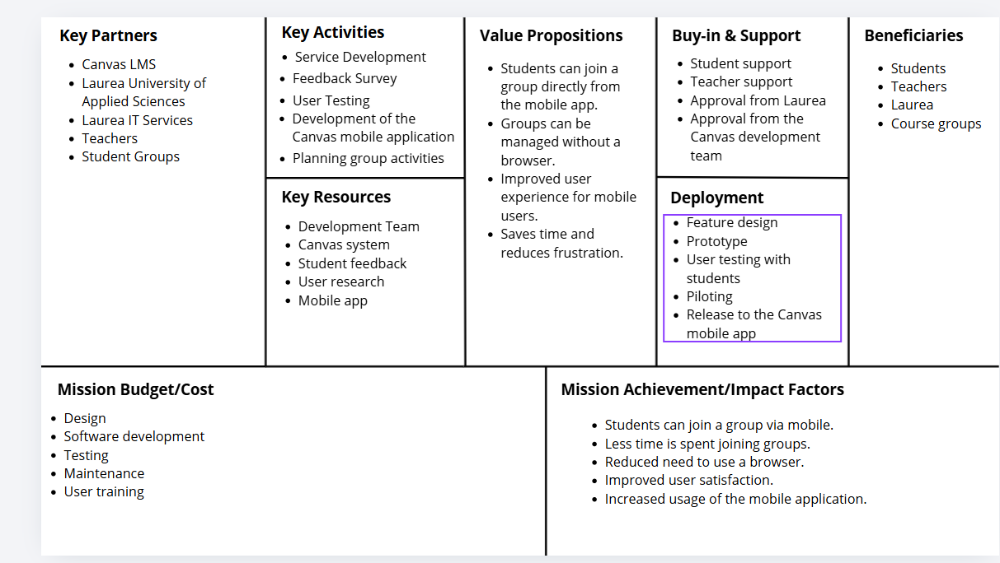

We designed a new mobile view for the Groups section. The goal is to let users access the Groups category on their phone as well, so they can join and leave groups on the go.
We tested the prototype with Laurea students. Most participants found the new Groups view easy to understand and liked the idea of managing groups directly in the mobile app. Users felt that the Add Members feature would save time and reduce the need to switch to the web version. Some users suggested making the Groups button more visible and adding clearer feedback messages after adding members.
Based on the feedback, we will improve the visibility of the Add Members feature and add confirmation messages. We would also like to test the prototype with a larger group of students to validate the solution.

